Информация к выпуску среды IDE NetBeans 6.7
IDE NetBeans представляет собой отмеченную наградами среду разработки, доступную для ОС Windows, Mac, Linux и Solaris. Проект NetBeans состоит из среды IDE с открытым кодом и платформы приложения которая позволяет разработчикам ускорить работу над созданием настольных и мобильных приложений, а также веб-приложений и приложений уровня предприятия, используя при этом платформу Java, а также JavaFX, PHP, JavaScript и Ajax, Ruby and Ruby on Rails, Groovy и Grails, а также C/C++.
Проект NetBeans поддерживается активным сообществом разработчиков, которое предлагает обширную документацию и обучающие материалы, а также множество сторонних подключаемых модулей.
Обзор выпуска
Среда IDE NetBeans 6.7 интегрирована с проектом Kenai, который представляет собой среду совместной разработки для размещения проектов с открытым исходным кодом. Kenai и среда IDE NetBeans позволяют группе разработчиков создавать проекты, выгружать, редактировать, отлаживать, компоновать, обсуждать и загружать код с помощью единого и простого в использовании интерфейса!
В этом выпуске также реализовано дальнейшее расширение успешных функций версии NetBeans 6.5, среди которых встроенная поддержка Maven; интеграция GlassFish и Hudson, а также расширения Java, PHP, Ruby, Groovy и C/C ++.. Основными особенностями выпуска версии 6.7 является поддержка JavaScript 1.7, Ruby Remote Debugging и интеграция с пакетом Java ME SDK 3.0.
Получение среды IDE NetBeans 6.7.1
В настоящий момент для загрузки доступна версия IDE NetBeans 6.7.1, которая является обновлением среды IDE NetBeans 6.7.

В среде IDE NetBeans 6.7.1 выполнены следующие изменения:
- Поддержка JavaFX 1.2
- Обновление GlassFish v3 Prelude для включения исправлений из пакета #28f
- Интеграция важных исправлений ошибок с учетом отзывов пользователей, что особенно касается редактора Java и области сканирования проекта
Документация
В качестве руководства по началу работы со средой IDE NetBeans 6.7.1 используйте следующие документы.
Ключевые возможности
|
Средства подключенного разработчика
- Создание проектов Kenai с открытым кодом непосредственно в среде IDE
- Управление проектом Kenai и сотрудничество с единомышленниками
- Отчеты по отслеживанию ошибок в файлах с использованием Jira и Bugzilla
|
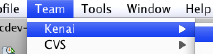
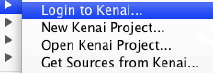
|
|
Maven
- Программа просмотра графиков зависимостей библиотек
- Оптимизированное автозавершение кода для параметров подключаемого модуля Maven
- Поддержка Java EE, поддержка создания и использования веб-служб
- Редактор POM и расширения навигатора
|
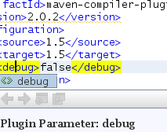
|
|
PHP
- Поддержка PHPUnit
- Охват кода и поддержка Selenium
- Автозавершение кода SQL в редакторе PHP
|
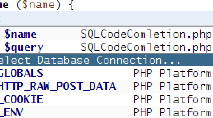
|
|
GlassFish
- Интеграция экземпляра Glassfish v3 Prelude с предварительно настроенной Derby (Java DB)
- Поддержка автозавершения кода для Glassfish v3 Prelude
- К древовидному представлению в проводнике служб добавлена иерархия
|
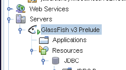
|
|
Groovy и Grails
- Поддержка Grails 1.1 без установки дополнительных компонентов
- Автозавершение кода
- Отключение открытия обозревателя при запуске и настройка платформ, используемых с проектами Grails
- Вызов команды Grails или пользовательского сценария из пункта контекстного меню
|
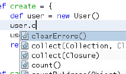
|
|
JavaFX
- Создание, тестирование, отладка, создание профилей и развертывание проектов JavaFX
- Редактор JavaFX с подсветкой синтаксиса, переходами по исходному коду, автозавершением кода, сворачиванием кода, всплывающим документированием javadoc и обнаружением ошибок.
- Предварительный просмотр визуальных элементов в реальном времени
- Палитра фрагментов кода для преобразований, эффектов и анимаций
|
 |
|
Ruby и Rails
- Удаленная отладка
- Усовершенствования поддержки констант Ruby
- Действия выполнения и отладки для тестов и наборов тестов включены в контекстное меню
- Поддержка тестов Shoulda
|
 |
|
C/C++
- Средства профилирования DLight для проектов C++ (с минимальными затратами!)
- Интегрированная поддержка популярной библиотеки Qt и инструментальных средств
- Дополнительная поддержка реорганизации и генерации кода в редакторе C/C++
- Ракурс расширения макроса для анализа выходных данных препроцессора
|
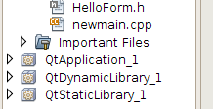
|
|
Средство профилирования
- Экспорт данных профилирования в файлы форматов CSV, HTML и XML
- Поддержка запросов OQL в HeapWalker для анализа содержимого дампа "кучи"
|
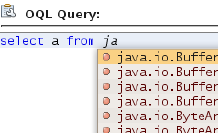
|
|
Отладчик
- Параметры отладчика для индивидуальной настройки процесса отладки
- Простой просмотр и настройка источников перед началом сеанса отладки
|
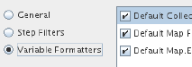
|
|
Java
- Интеграция служб Hudson для проектов Ant и Maven
- Сгенерированные корни исходных файлов теперь выводятся на экран на закладке "Projects"
- Выполнен переход библиотеки Struts на версию 1.3.8
|
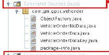
|
|
Java ME / Mobility
- Поставляется вместе с Java Platform Micro Edition Software Development Kit 3.0
- Поддержка платформы Java Card Platform 3.0
- Полная поддержка SVG Rich Components в Visual Mobile Designer
- Усовершенствования SVG Composer
|
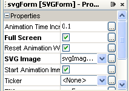
|
|
Платформа NetBeans
- Расширения для окна вывода, каталога центра обновлений, а также повышенная производительность поиска
- Оптимизированное поведение панели инструментов и средства разрешения декларативных типов MIME
- Возможность изменения расширений имен файлов
|
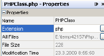
|
Дополнительные сведения доступны на странице Новое и заслуживающее внимания в среде IDE NetBeans 6.7.